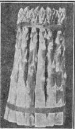

282. Marketing Asparagus
Description
This section is from the book "Vegetable Gardening", by Ralph L. Watts. Also available from Amazon: Vegetable Gardening.
282. Marketing Asparagus
Asparagus shoots may be washed before or after bunching. Although both methods have their advocates, it is pleasanter to handle the washed stalks, and cleaning may be done more thoroughly before bunching. Careful grading is of greater importance than with most other garden crops. Most growers make three grades; namely, extra, prime, and second, while a fourth (culls) makes it possible to grade more perfectly.
Special devices known as "bunchers" are in general use. The bunches vary from 6 to 9 inches in length and are usually 4 1/2 inches in diameter, weighing from 2 to 3 pounds. Nine-inch bunches are probably most popular on eastern markets. They should weigh not less than 2 1/2 pounds. The number of stalks to the bunch varies from a dozen to two or three dozen. Eighteen shoots to the bunch has been the average on one of the largest places in this country.
The bunches must be tied firmly near the top and near the bottom. Strong jute and raffia have been used extensively, but red tape, 1/4 to 3/8 inch wide, is now in general use, because it attracts attention and conveys the idea that the product is of superior quality. Figure 58 illustrates a bunch tied with red tape ready for market.
Standing the bunches in shallow trays of pure water, as previously described (281), is often an advantage during the week, as well as in holding over Sunday. The product may be held in perfect condition for several days by this plan, which may also be the means of avoiding a glut or of meeting a special demand. The shoots soon take up sufficient water to make the bunches tight and they also increase somewhat in length. The crop is hauled to local markets in all sorts of packages. Second-hand berry crates and carriers are often used for shipping. This is a mistake. The most successful extensive growers use crates made for the purpose. These are generally made to hold two or two and one-half dozen bunches, and are deep enough for the bunches to stand erect without injury to the tops. The "Southern Crate" is 28 inches long, 22 inches wide and 9 inches deep, outside measurements. The ends are 7/8 - inch pieces and the side slats 3/8 of an inch thick and 4 1/2 inches wide. This crate holds thirty 4 1/2-inch bunches. For long shipments, damp moss should be placed in the bottom of the crate and the bunches should always be packed firmly to carry well. In California the shoots are not bunched, but packed loosely, usually in 40-pound boxes, sold by weight.
Fig. 58. asparagus bunched for market.
283. Yields And Returns
Two thousand bunches an acre is considered a good yield, and is probably somewhat above the average. Yields at Concord, Mass., have run as high as 3,400 bunches an acre. An extensive grower in New Jersey has been averaging about 2,500 an acre, and another grower in the same state has been doing somewhat better. Prices are variable. Ten dollars a dozen bunches is received sometimes for the fancy extra grade early in the season, but prices generally range from 15 to 35 cents a bunch, and 20 cents is a fair average price, after deducting commission and transportation charges. An expert grower shipping to Boston, New York and Philadelphia sold $5,000 worth of asparagus from 10 acres in one season. The gross income from small areas often exceeds $500 an acre, while half this is regarded satisfactory by the majority of gardeners. When modern methods are applied asparagus is unquestionably one of our most profitable vegetables.
Continue to:
Tags
plants, crops, gardening, cultivated, harvesting, food ,greenhouses, fertiliser, vegitables